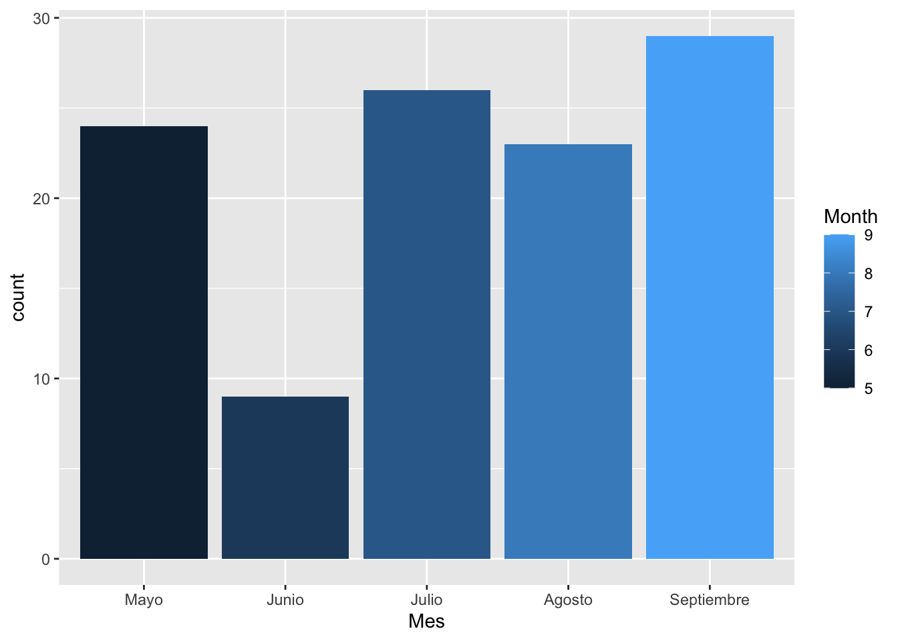

7 Una mirada a las correlaciones
R permite constuir matrices gráficas con información variada de los datos, como por ejemplo los gráficos de densidad, gráfico de dispersión y correlaciones que facilitan ese acercamiento a la base de datos a trabajar.
Este gráfico se construye con el paquete GGally:
ggpairs(datos[filas, c(“Columna 1”, “Columna2”,…, “Columna n”)])

Veamos otras opciones de matrices de gráficos de resumen de datos usando los paquetes peformanceanalitycs y psych:
## Warning in par(usr): argument 1 does not name a graphical parameter
## Warning in par(usr): argument 1 does not name a graphical parameter
## Warning in par(usr): argument 1 does not name a graphical parameter
## Warning in par(usr): argument 1 does not name a graphical parameter
## Warning in par(usr): argument 1 does not name a graphical parameter
## Warning in par(usr): argument 1 does not name a graphical parameter

Seguidamente se hace un análisis para las correlaciones, la idea es ver si entre las variables numéricas presentes existe algún tipo de correlación fuerte.
Primeramente, trabajaremos con la base de datos original, es decir, sin la nueva columna creada para el Mes:
## Ozone Solar.R Wind Temp Month Day
## 1 41 190 7.4 67 5 1
## 2 36 118 8.0 72 5 2
## 3 12 149 12.6 74 5 3
## 4 18 313 11.5 62 5 4
## 7 23 299 8.6 65 5 7
## 8 19 99 13.8 59 5 8Podemos usar el operador pipe para filtar nuestra base de datos, como se muestra acontinuación:
calidadaire <- airquality %>% # se indica cuál es la base de datos usada
drop_na() %>% # se eliminan los na, toda la fila
dplyr::select(-c(Month, Day)) # eliminamos las columnas Month y DayEs impornte explicar el significado de la instrucción dplyr::select.
Ocurre con frecuencia en R que muchos paquetes podrían tener una función con el mismo nombre, entonces, cuando se llama a la función, que en este ejemplo es select, y queremos que sea select del paquete dplyr específicamente y no de otro paquete, entonces se debe indicar el nombre del paquete seguido por el operardor :: y luego la función a usar.
Note que los datos ya no contienen las celdas vacías ni tampoco las columnas de Month y Day.
Es importante tomar en cuenta que la correlación lineal es una métrica sobre la relación lineal entre dos variables, no es un modelo como si lo es una regresión lineal.
Hay varias formas de ver las correlaciones en R, seguidamente se presentan varias opciones:
## # Correlation Matrix (pearson-method)
##
## Parameter1 | Parameter2 | r | 95% CI | t(109) | p
## ---------------------------------------------------------------------
## Ozone | Solar.R | 0.35 | [ 0.17, 0.50] | 3.88 | < .001***
## Ozone | Wind | -0.61 | [-0.72, -0.48] | -8.09 | < .001***
## Ozone | Temp | 0.70 | [ 0.59, 0.78] | 10.19 | < .001***
## Solar.R | Wind | -0.13 | [-0.31, 0.06] | -1.34 | 0.183
## Solar.R | Temp | 0.29 | [ 0.11, 0.46] | 3.21 | 0.003**
## Wind | Temp | -0.50 | [-0.63, -0.34] | -5.98 | < .001***
##
## p-value adjustment method: Holm (1979)
## Observations: 111Podríamos resumir esta tabla:
## # Correlation Matrix (pearson-method)
##
## Parameter | Temp | Wind | Solar.R
## -----------------------------------------
## Ozone | 0.70*** | -0.61*** | 0.35***
## Solar.R | 0.29** | -0.13 |
## Wind | -0.50*** | |
##
## p-value adjustment method: Holm (1979)Graficar los datos de la matriz resultante de la correlación es posible, pero primero se debe organizar la infomración para que la función plot puede interpretarlos correctamente. Note que el resultado anterior del summary muestra una matriz triangular, pero el comando plot necesita que esta matriz sea cuadrada para poder graficar correctamente.
La siguiente instrucción, permite hacer cuadrada la matriz de correlaciones:
## # Correlation Matrix (pearson-method)
##
## Parameter | Ozone | Solar.R | Wind | Temp
## ----------------------------------------------------
## Ozone | | 0.35*** | -0.61*** | 0.70***
## Solar.R | 0.35*** | | -0.13 | 0.29**
## Wind | -0.61*** | -0.13 | | -0.50***
## Temp | 0.70*** | 0.29** | -0.50*** |
##
## p-value adjustment method: Holm (1979)Se podría graficar de la siguiente manera:

Una forma más elegante de hacer este gráfico, es a partir del operador pipe:

Se puede cambiar la forma de la geometría:

El siguiente gráfico de correlación se base en un modelo gaussiano, requiere el paquete ggraph